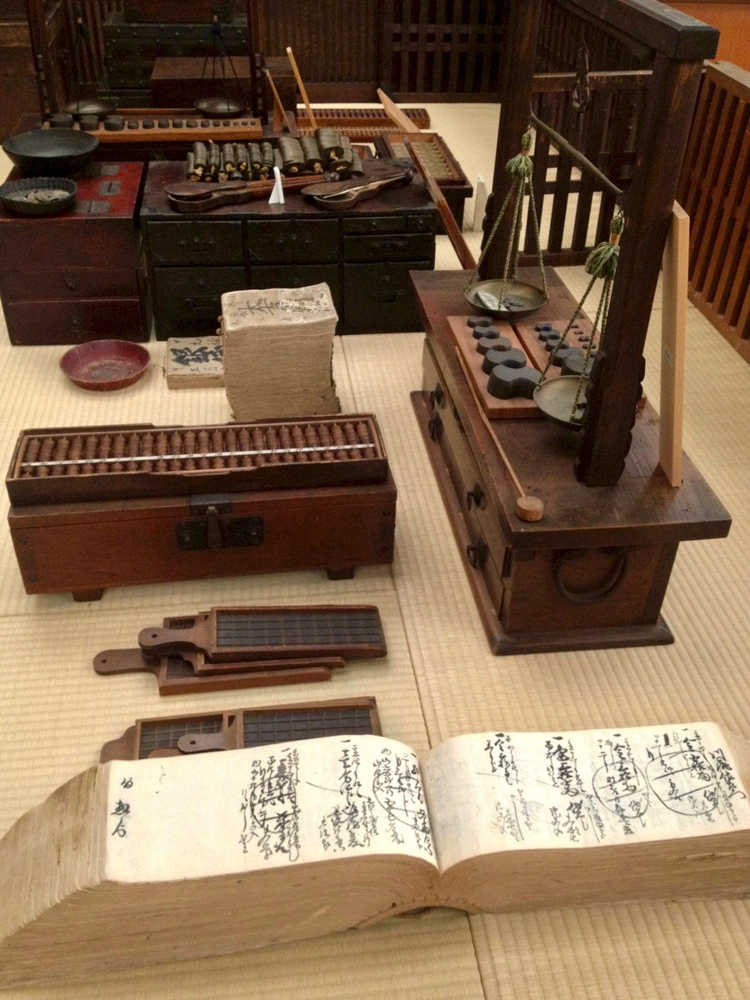
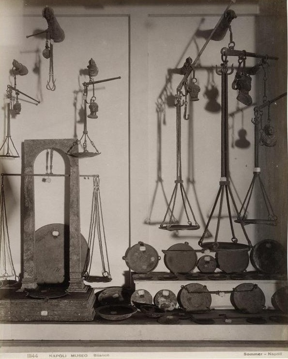
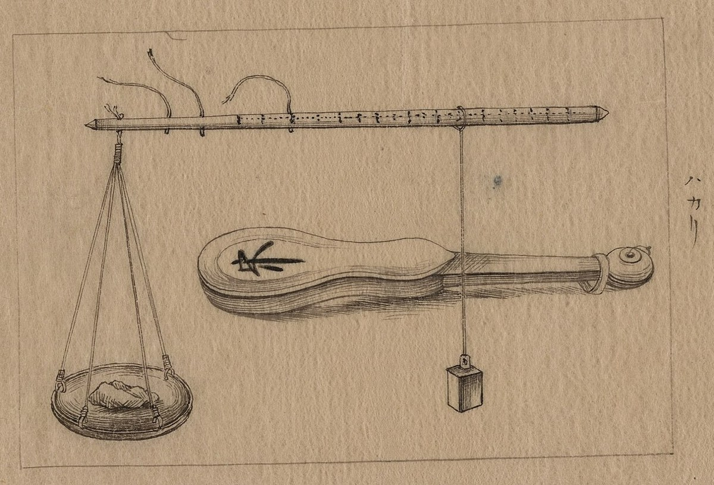

序水平を読む指
扉の絵は、紀元前1275年ごろ、エジプトの書記フネフェルのために描かれた『死者の書』の一場面である。死者の心臓が、天秤の左の皿に載せられている。右の皿には一枚の羽根。正しさの女神マアトの羽根だ。心臓が羽根より重ければ、天秤の脇で口を開けて待つ怪物アメミトに食われる。
見るべきは皿よりも、支柱の脇にひざまずくジャッカルの頭の神アヌビスの手である。アヌビスは片手を高く上げ、支柱の頂から垂れる細い紐に指先を添えている。下げ振り、おもりをつけた糸だ。竿が少しでも傾けば、糸と支柱のあいだに角度が生まれる。アヌビスはその角度を読んでいる。
この天秤は、心臓の重さを量っていない。左右が釣り合っているかどうかだけを読んでいる。同じ場面を描いた『アニの死者の書』について、エジプト学者ウォリス・バッジは、竿は水平のままで、神々は心臓が真理とちょうど釣り合えば満足したのだろうと書いた。フネフェルの絵でも、竿は定規で引いたように水平である。左へ回そうとする働きと右へ回そうとする働きが打ち消し合い、合計がゼロであること。下げ振りはそれを確かめる計器で、静力学の言葉でいえば $\sum M=0$ を読む最古の指だ。
だが、この天秤が一度も問わないものがある。距離である。二つの皿は、支点から等しい距離に吊られている。
一方、第2回の教科書の図2.25は「天秤」と題されている。描かれているのは、支点の左 $L/3$ に $2F$、右 $2L/3$ に $F$ を吊った棒で、腕は一対二。名前は等しい腕のもの、中身は等しくない腕のもの。この食い違いが、この稿の出発点になる。
一正しさが形に宿るとき
等しい腕の天秤は、置き換えの道具である。片方に量りたいものを、もう片方に分銅を載せ、傾かなくなるまで分銅を足し引きする。比べているのは、同じ距離に置いた二つの重さだけで、比も掛け算もいらない。正しさは、左右が対称であるという形そのものに宿り、誰の目にも確かめられる。
天秤は発明から約2500年のあいだ、知られるかぎりすべて等腕であり、その間「重さ」以外の力学の概念を生まなかった、とする研究がある（ユルゲン・レンとピーター・マクローリン、2018年）。等しい腕は正しさを保証した。そして、新しい量は何一つ数えなかった。
形が正しさを引き受けているとき、不正が入りこめる隙間は二つしかない。分銅と、読みである。『死者の書』第125章で、死者は神々の前で生前の潔白を一つずつ唱える。そのなかに、秤の分銅に重さを加えなかった、秤の指針を読み違えなかった、という誓いがある。冥界の天秤の前で、生前の秤の正しさを誓うのである。
江戸の両替商の店先にも、同じ形がある。天秤台から吊った等腕の天秤と、繭の形をした分銅。分銅は、幕府に許された後藤家だけが作ることができた。腕の形が正しいなら、守るべきは分銅のほうだからだ。

二手が先に量を見つけた
腕を等しくしないと、何が起こるか。肉屋が、大きな肉の塊を小さな錘一つで量れるようになる。
アリストテレス学派の『機械学の問題』（前4世紀後半ごろとされる）は、まさにそれを問う。なぜ竿秤は、小さな「付属物」で大きな肉を量れるのか。答えはこうだ。竿秤は天秤であると同時にてこであり、吊り紐が上からの支点になった、逆さのてこなのだ。答えは形の類比にとどまり、重さと距離の反比例には触れていない。
ほぼ同じ時代とされる中国の『墨子』経説下は、竿秤の釣合いをこう書く。「権重相若也、相衡則本短標長」――錘と荷の重さが等しいのに釣り合っているなら、荷の側の腕は短く、錘の側の腕は長い。両方に同じ重さを足せば、長い腕の側が必ず下がる。「標得権也」、長い腕が錘の力を得るからだ。比例の式も証明もないまま、不等腕の釣合いの核心が言い当てられている。
不等腕の秤を使う者は、異なる重さを、支点から異なる距離で釣り合わせなければならない。重さと距離を組にして比べる実践が、ここで初めて要る。その実践から、のちにギリシア語で「ロペー」、すなわちモーメントと呼ばれる量が生まれた、とレンらは推定する。
量は、定義される前に、肉屋の手の中にあった。
三証明はそれを一つにした
アルキメデスの『平面の釣合いについて』は、等しい腕の世界から出発する。第一の公理は、等しい重さは等しい距離で釣り合う。そこから命題6と7で、二つの量は重さに反比例する距離で釣り合う、と導こうとする。重い錘を小さな錘の組に割り、支点の両側に対称に並べ直し、最後には「等しい重さが等しい距離」の形に帰着させる。
二千年あまり後、エルンスト・マッハは『力学の発達』でこの証明を検めた。重さ $P$ が距離 $L$ で釣合いを乱す働きは積 $P\cdot L$（いわゆる静的モーメント）で測られる、という仮定が、アルキメデスとその後継者のすべてによって「多かれ少なかれ、こっそり、黙って」持ち込まれている。錘を対称な組に割って並べ直す操作そのものが、証明しようとしている命題をすでに使っているからだ。マッハはそれを「ギリシア的な証明熱」と呼んだ。$P\cdot L$ は証明されるのではなく、現象の中に直接見て取られるほかない、というのがマッハの立場である。
それでもマッハは証明を捨てなかった。$P\cdot L$ を与えられたものとして受け取るなら、アルキメデスの演繹は、一つの単純な場合が他のすべてを含むことを示し、すべての場合に同じ見方を打ち立てる点で、なおかなりの価値を保つ、とも書いている。
肉屋の手が量を見つけ、アルキメデスの手がそれを一つの見方に束ねた。量を見つけることと、量を法則にすることは、別の仕事だった。
四証明の後も、目盛りは手で刻まれた
ポンペイの遺跡からは、ローマの竿秤が文字どおり何百も出ている。そのなかに、鍋の本体を錘にし、柄を竿にした即席の秤がある。柄のスリットに沿って刻まれた目盛りは、理論から割り出したものではなく、一つずつ実測でつけた跡だという。アルキメデスの死から約三百年後の刻みである。
ナポリの国立考古学博物館には、こうした秤が壁一面に掛けられている。十九世紀の写真家ゾンマーが撮った一枚では、竿秤の錘の多くが人の胸像の形をしている。顔のついた錘が竿の上を滑り、止まった位置で重さを告げる。アヌビスは指で水平を読んだが、ここでは顔が自ら重さを告げる。

腕を不揃いにしたとき、正しさの置き場所が移った。等腕の天秤では、正しさは形にあった。竿秤では、正しさは目盛りにある。そして目盛りは、見ただけでは確かめられない。刻みが一つずれていても、竿の形は何も変わらない。
だから目盛りには、それを保証するものが要る。中国の竿秤の目盛り（秤星）は、北斗七星と南斗六星に福・禄・寿の三星を加えた十六の星だと伝えられる。一両ごまかせば福を、二両ごまかせば禄を、三両ごまかせば寿を損なう、と。エジプトでは一枚の羽根が魂全体を裁いたが、ここでは十六の星が刻み一つずつを見張っている。
江戸幕府はそれを制度にした。承応二年（1653年）、東三十三か国の秤は江戸の守随家、西三十三か国は京都の神家が支配すると定められた。秤座は秤の製作、頒布、検定、修繕を独占し、合格した秤に印を押して、一挺につき金一分の印賃を取った。秤が壊れても、持ち主が自分で直すことは許されない。およそ十年ごとに「秤改め」が国々を回り、正しい秤には焼印を押し、悪い秤は取り上げて壊した。この仕組みは、明治八年（1875年）の度量衡取締条例まで続く。
1878年の一枚のペン画（アメリカ議会図書館蔵）に、日本の竿秤と鞘が描かれている。竿の上に秤星が点々と並び、荷皿の側の端には吊り紐が三本ある。紐を掛け替えると支点が移り、同じ錘で量れる重さの範囲が変わる。腕の比を、手元で切り替える仕掛けである。秤座が廃されて三年、星は同じように竿に並んでいる。

結定義は検印である
第2回の教材は、$M=FL$ を「定義」と書いた。
定義とは、この刻みで数えると決めて押す検印である。秤座の焼印は幕府が押した。教科書の検印を押しているのは、ある一人の権威ではなく、竿の上で確かめ続けられてきた刻みの総体だ。三章のマッハの言葉の裏側には、ポンペイの鍋の柄に刻まれた一本一本の線がある。教科書の「定義」は、約束であると同時に、検定済みの目盛りでもある。
図2.25 が「天秤」と題されているのも、だから誤りではない。名は等しい腕の時代から受け継ぎ、中身は等しくない腕の時代から受け取っている。
この回の講義は、もう一つ、天秤の裏返しを用意していた。偶力である。天秤は、同じ向きに引く二つの重さを等しい腕に吊り、回す働きを消して竿を水平に保つ。偶力は、逆向きの二つの力を平行にずらして置き、並進させる働きを消して、回す働きだけを残す。アヌビスが読んだのは前者のゼロであり、ハンドルを回す両手が作るのは後者の、どこにも中心をもたない回転である。
等しい腕は裁き、等しくない腕は数える。
本棚このコラムの書架
参照した本 ── 本文が依拠した原典
- 『死者の書』第125章・第30B章（E. A. ウォリス・バッジ英訳 The Book of the Dead） 英訳 1920年ごろ（Project Gutenberg #7145）アニの場面の「竿は水平のまま」という解説と、否定告白の秤の誓い（序・一）。
- 伝アリストテレス『機械学の問題』第20問 前4世紀後半ごろ竿秤を「逆さのてこ」とする説明（二）。レンとマクローリンの論文の英訳で確認。
- 『墨子』経説下 戦国時代「相衡則本短標長…標得権也」（二）。
- アルキメデス『平面の釣合いについて』第1巻 前3世紀公理1と命題6・7（三）。
- エルンスト・マッハ『力学の発達』（Die Mechanik in ihrer Entwickelung） 初版 1883年。引用は英訳第2版 The Science of Mechanics（T. J. McCormack 訳、Open Court、1902年）pp.14, 17–19 からの筆者訳アルキメデスの証明への批判と、その価値の認め方（三・結）。
- J. Renn & P. McLaughlin, “The Balance, the Lever and the Aristotelian Origins of Mechanics” R. Feldhay ほか編 Emergence and Expansion of Preclassical Mechanics、Springer、2018年等腕の天秤の約2500年、不等腕から生まれた量、ポンペイの即席の竿秤（一・二・四）。
※原典はいずれも通読していない。該当箇所は、英訳・研究論文・オンライン資料（下の「事実確認に用いた資料」）で確認した。
参考図書 ── さらに読むために
- エルンスト・マッハ『マッハ力学史 ―古典力学の発展と批判』上・下（岩野秀明訳） ちくま学芸文庫、2006年三章で引いたアルキメデス批判の全文が読める。第1回のコラムでも薦めた一冊。
- E. A. ウォリス・バッジ The Book of the Dead Project Gutenberg で全文公開アニのパピルスの場面を、図像の細部まで解説した古典的な英訳。
図版の出典
- 『フネフェルの死者の書』：File:The judgement of the dead in the presence of Osiris.jpg（Public domain。右に紙色の余白を付け足した）
- 両替商の店先：File:Money Changers in Edo period - 2.jpg（KKPCW、CC BY-SA 4.0。縮小のみ）
- ナポリ博物館の秤：File:Sommer, Giorgio (1834-1914) - n. 11144 - Napoli - Museo - Bilance.jpg（Public domain）
- 日本の竿秤と鞘：File:Steelyard & case LCCN2009630080.jpg（Public domain。台紙の余白を切り取った）


_-_n._11144_-_Napoli_-_Museo_-_Bilance.jpg){kind=link}

事実確認に用いた資料
- Budge, The Book of the Dead（Project Gutenberg）：アニの場面の水平な竿、アヌビスと指針、否定告白の秤の誓い
- Renn & McLaughlin (2018)：等腕の天秤の約2500年、不等腕と rhopê、『機械学の問題』第20問、ポンペイの竿秤
- MacTutor “Archimedes on statics”：公理1と命題6・7
- Mach, The Science of Mechanics, 2nd ed. (1902)：pp.14, 17–19 の引用
- 維基文庫「墨子/經說下」：「相衡則本短標長…標得權也」の原文
- コトバンク「秤座」・Wikipedia「秤座」・中央区「江戸秤座跡」：1653年の東西分掌、独占の内容、印賃、秤改め、1875年の度量衡取締条例
- 文化遺産オンライン「両替天秤・分銅」：後藤家の分銅
- 百度百科「秤星」：十六星と福・禄・寿の言い伝え